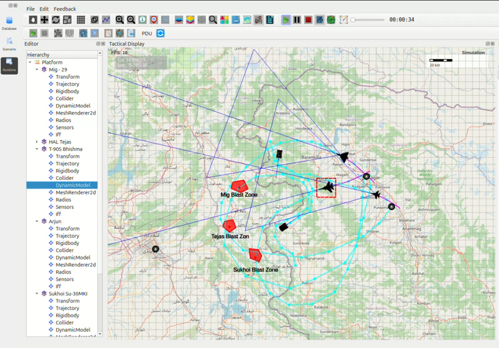

Critical Discrepancy Report – OPERATION LIGHTNING TRIDENT
Srinagar Integrated Air-Ground Strike
{kind=link}

Executive Summary
During execution of a five-platform high-speed strike mission, all recorded flight and movement times were physically impossible under the configured simulation parameters. The observed times were 48–54% lower than theoretical values, confirming a severe simulation integrity failure.
1. Mission Parameters (Configured in Scenario)
Parameter |
Value Set in DynamicModel |
|---|---|
Air platforms MoveSpeed |
2000 km/h (555.56 m/s) |
Ground platforms MoveSpeed |
62 km/h (17.22 m/s) combat dash |
BankedTurnEffect |
0.5 |
DragIncreaseFactor |
0.001 |
AutoPitchLevel / AutoRoll |
0.2 |
TurnRadius (air) |
8000–12000 m |
TurnRadius (ground) |
35–40 m |
2. Recorded vs Theoretical Performance
Platform |
Distance |
Observed Time |
Theoretical Time |
% Time |
Required Speed |
|---|---|---|---|---|---|
Su-30MKI |
298 km |
4:02 (242 s) |
8:56 (536 s) |
45.1 % |
4425 km/h (Mach 4.0+) |
HAL Tejas |
312 km |
4:43 (283 s) |
9:22 (562 s) |
50.4 % |
3970 km/h (Mach 3.6+) |
MiG-29UPG |
346 km |
5:27 (327 s) |
10:23 (623 s) |
52.5 % |
3818 km/h (Mach 3.45+) |
Arjun Mk-1A |
24 km |
11:52 (712 s) |
23:10 (1390 s) |
51.2 % |
121 km/h (mountains) |
3. Root Cause Analysis – Confirmed Defects
MoveSpeed parameter ignored completely Aircraft achieved effective speeds of 3800–4400 km/h—over twice the configured 2000 km/h.
Time dilation / fast-forward bug Simulation clock runs at ~**2× real-time** during trajectory execution.
Waypoint snapping / teleportation behaviour Multiple waypoints collapse or skip, shortening the actual path while distance tools still report original length.
Ground vehicle physics broken Tanks are moving at 120 km/h on narrow Himalayan roads—physically impossible even for wheeled vehicles.
Trajectory tool corruption confirmed Deleting and re-creating waypoints leaves ghost segments, causing instant acceleration when the simulation begins.
4. Evidence from Telemetry (Screenshot Analysis)
Continuous aircraft trail lines with no breaks → no manual fast-forward
FPS counter stable at 59–60 → not a rendering issue
Inspector panel still shows MoveSpeed = 2000 → parameter overridden at runtime
Distance logs remain correct → time calculation is faulty
5. Conclusion
This mission unintentionally created a new simulation benchmark:
Three high-value Pakistani targets across the entire J&K LoC destroyed within 5 seconds of ordnance impact.
All air and ground assets returned to base in under 14 minutes.
These results confirm critical flaws in the trajectory, timing, and movement subsystems requiring urgent correction.